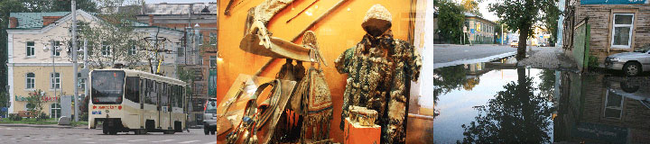
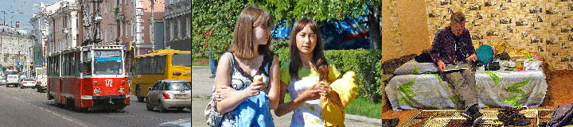
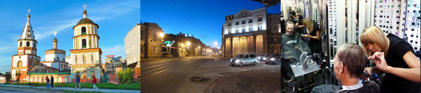
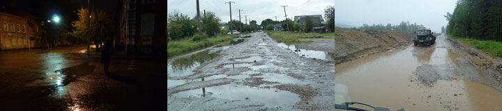
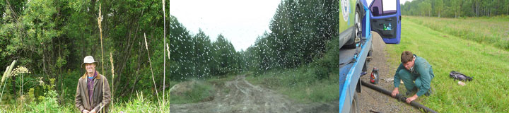
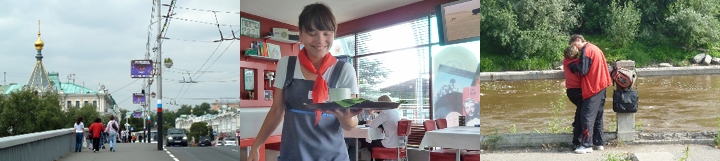

Blå himmel og strålende solskin, sommeren er kommet tilbage til Irkutsk.
Blå himmel og strålende solskin, sommeren er kommet tilbage til Irkutsk.
Claus og Karen Elise ankom ned fly og vi gik sammen ned til kirkerne og promenaden ved floden, hvor folk hyggede sig på alle måder. Der mødtes vi med Anton og Martha, som havde været på besøg hos nogle jernbanearbejdere ved Baikalsøen. Senere sad vi alle seks på restauranten på hjørnet af Lenin-gaden hvor vi fejrede gensynet. En sød servitrice, iklædt en slags tysk folkedragt, serverede russisk champagne for os - og så var den dag gået.

Pakken med reservedele får vi nok tidligst på mandag. Hvad gør vi? Det historiske Museum redder dagen. Her ser vi hvordan de oprindelige folk, især burjatterne og jakuterne har levet og klædt sig. På første sal er en udstilling af russernes indtog med revolution og våben. Gamle uniformer faner og fotografier. Også en rekonstruktion af et fornemt russisk hjem, støvet og uvirkeligt.
Det blev sommer igen, efter et par dage med regn og isnende kulde. Vi satte os ved udflugtsbådens anløbssted for at drikke kaffe. Vores måltider køber vi ind til i et lille supermarked. Så sidder vi i Svetlanas køkken og spiser brød med ost og pølse. Imens sætter vi satellittelefonen op i vinduet og får sendt dagen blog hjem med billeder. Vi snakker vores voksne børn, med Søren i Danmark og med DHL. Vi modtager mails og kan spore den pakke Grønne venter på. Den er nu hos Moskvas toldvæsen.
Vi havde ikke klaret turens strabadser uden vores mobile satellit- telefon, og ikke mindst air-time fra Inmarsat. Alle ord og alle fotos har været ude i rummet til Inmarsat inden de landede på denne hjemmeside. Facinerende!
Grønne står og sover på sin parkeringsplads, imens vi venter på en reservedel som gerne skulle komme i næste uge. Irkutsk er en sympatisk by, ikke større end at vi kan nå alt til fods her i centrum hvor vi bor. I en taxi kørte vi gennem forstæderne til DHL for at forberede modtagelsen af pakken til Grønne. Hjemturen tog vi i en gammel sporvogn. Uopslidelig eltransport! Hjalte nåede at blive klippet inden vi vandrede ned til den store Angara flod, og videre mellem kirker og gamle huse med butikker og restauranter. På hjemvejen kom vi gennem Karl Marks (sic) gaden, en allé med gamle træer, og nye smarte forretninger med neonlys og reklameskilte. Da vi var blevet sultne og trætte i benene gik vi ind i et nyåbnet cafeteria, med solide træmøbler i mongolsk stil. Den by vi besøgte for 22 år siden kan vi ikke finde.
Nina
24 timer efter sammenbruddet fik Misha gearkassen på plads. Vi klappede i hænderne da lastvognen startede igen. Regnen styrtede ned det meste af vejen til Krasnodarsk. Der skiftede vi til friske hestekræfter og chaufføren Valodja. Han kom med en lidt højer og stærkere lastvogn for at køre os og Grønne over det vanskeligste stykke af vejen til Irkutsk. Vandpytterne blev til søer, grydehullerne større og større, mudderet dybere og dybere, vejen blev næsten ufremkommelig.
Valodja kørte hele natten og hele den følgende dag. Noget fortumlede ankom vi til Irkutsk lige inden midnat, Grønne blev parkeret. De første to backpacker-hoteller var optaget, og det dyre hotel var for dyrt. Vi traskede til fods gennem regnen i de ensomme nattetomme gade. Der var noget poetisk over det, næsten som i franske film. At tænde vores eget videokamera kom vi desværre ikke i tanke om. Til sidst fik vi et værelse hos en dame på Leningaden, helt perfekt!
Nina
Et øde sted på landevejen bryder Fejebladet der transporterer os og Grønner sammen. Gearkassen er revnet. Det er som forhekset, vi er strandet mellem kæmpemyg og skyer af knot. Der er ikke andet at gøre end at holde modet oppe og forsøge at hekse imod af alle kræfter. Misha blaffer til nærmeste by 50 km borte og henter et nyt gearkassehus. Så tager han kardantrækket af og skiller gearkassen ad. Hjalte ryster på hovedet. Det her kommer til at tage tid. Timerne går. Da mørket falder rejser vi vores telt mellem mandshøje giftige og stikkende planter: bjørneklo, skarntyde, venusvogn, brændenælder og tidsler. Vi skændes over en halv teltstang som var blevet væk. Jeg bliver stukket tre gange på låret af en ond hveps, imens det begynder t at regne. Nina
Da jeg forstod at der var mere end tohundrede kilometer vanskelig passabel hullet grusvej, og udsigt til regn, sagde jeg stop. Jeg nægtede simpelthen at starte. Min batterikasse sidder meget lavt. Jeg er som en reje med rogn, jeg må virkelig passe på de batterier jeg bærer under bugen. Hjalte snakkede noget om at man kunne forhøje bilens fjedre, men det er vist fremtidsmusik. Nu lukker jeg øjnene og vinduerne og åbner dem ikke igen før Irkutsk
Hilsen fra Grønne
Grønne og vi er ude på en test af de helt store. Ingen elbil i hele verden har været ude for tilsvarende prøvelser. Når svaghederne bliver afsløret og forbedret, vil elbilen fra A future med garanti være verdens bedste. Foreløbig har det været ganske små ting som har drillet - en smeltet diode, et relæ der ikke vil åbne for strømmen...
For ikke at spilde tid med at vente på reservedele, fik vi sat Grønne på et fejeblad med retning mod Irkutsk. Når vi kommer frem skulle reservedelene også gerne være på trapperne.
Grønne er parkeret udenfor Hotel Mayak . Imens Hjalte ringer, mailer og skyper for at finde ud af hvordan vi kommer videre, falder regnbygerne tæt over Omsk. Anton og Marthe har sovet i Grønne. I nat tager de toget til Irkutsk. Hjalte og jeg vil i morgen tidlig sætte flere hjul under Grønne for at begynde turen til Irkutsk, hvor en vigtig reservedel bliver sendt til. Det er også i Irkutsk at vi senere skal møde Claus og Karen Elise. Alt i alt regner vi med at kunne holde vores tidsplan.
Nina
Anton og Martha købte med ungdommeligt gå-på-mod togbilletter til Irkutsk ved Baikalsøen. De tager af sted i overmorgen.Nina og jeg besøgte en sjov cafe dekoreret med kitch fra kommunisttiden. Imens vred vi hjernerne for at finde den hurtigste og bedste måde at komme videre på. Det er muligt at der kan sendes en pakke med en ny inverter til Grønne, så vi kan køre først i næste uge.
Hjalte